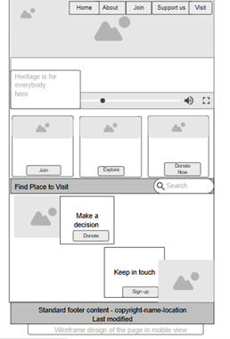
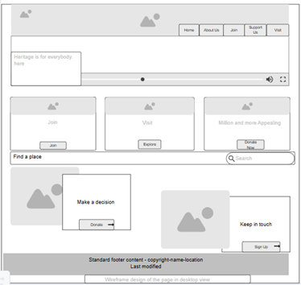

Local History and Heriatge Preservation
This website will focus on preserving and showcasing the history of a local town or city, aiming to educate residents and visitors about its cultural heritage and historical landmarks. – This name was selected to reflect a central space dedicated to preserving and promoting the rich cultural history of Osun State, Nigeria. It is easy to remember, informative, and brandable for local and international visibility.
Site Purpose
I chose this topic because Local history often goes unnoticed, yet it forms the foundation of community identity. This project lets me contribute to preserving stories and landmarks that future generations can learn from. It also gives me a chance to create meaningful and informative web content while combining design, research, and user engagement.
Scenarios
- What are the major historical sites I can visit in Osun State?
- How can I contribute stories or artifacts to the Osun Heritage Hub?
Color Schema
- #007B8A (Enamel Blue) – Used for headers and navigation background.
- #F4D03F (Heritage Gold) – Used for call-to-action buttons, highlights, and links.
Typography
- Playfair Display – For main titles and headers to give a historic and elegant feel.
- Roboto – For body text to ensure readability and modern clarity.
Wireframe
Mobile View:
Desktop View:
